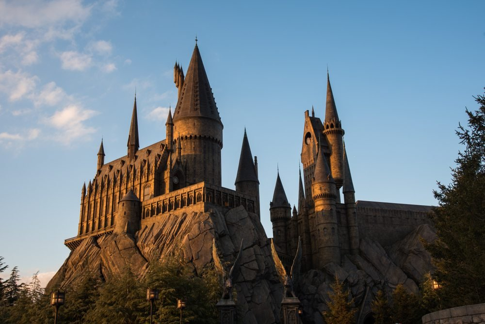
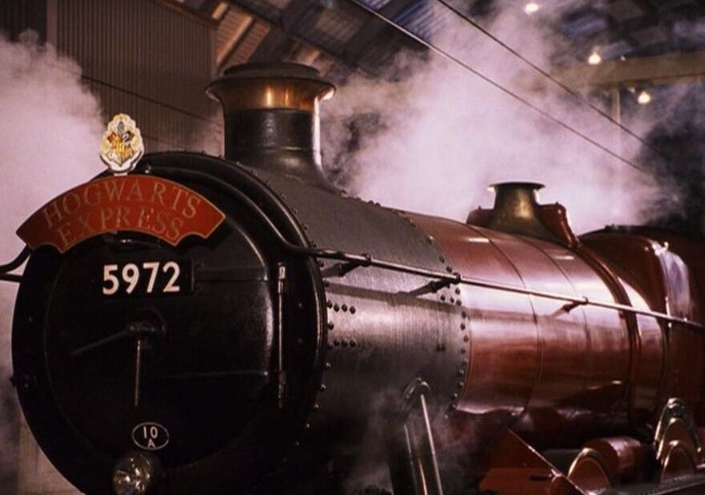

Ubicacion de Hogwarts
El castillo se ubica en unas montañas cercanas a un lago. La localización exacta no ha sido descubierta ya que está escondida por los más poderosos encantamientos posibles. Sin embargo, de acuerdo con Hermione Granger, no está muy lejos de Dufftown. Los encantamientos que protegen al castillo son clasificados como encantamientos anti-aparición y encantos repelentes de Muggles (como el repello muggletum), que lo hacen que ellos vean unas ruinas antiguas con un letrero que dice "Peligro, prohibido el paso" en lugar del castillo. Estos encantamientos pueden ser levantados por el Director. La mayoría de los dispositivos electrónicos no funcionan en los terrenos de Hogwarts.

Llegada a Hogwarts
Los estudiantes viajan hasta la estación King's Cross en Londres para abordar el Expreso de Hogwarts en la Plataforma 9¾. Para llegar hasta allí deben correr hasta la columna entre las plataformas 9 y 10. Después de un viaje de varias horas en dirección Norte, el tren llega a la estación enHogsmeade. Desde allí los estudiantes de primer curso son acompañados por Rubeus Hagrid hasta pequeños botes, los cuales (mediante magia) navegan a través de un lago a una gruta debajo del castillo de Hogwarts. Los estudiantes veteranos viajan hasta el castillo en carruajes llevados por thestrals. Cuando los estudiantes de primer año llegan por primera vez al castillo, no van directamente al Gran Salón
Los barcos de Hogwarts
para empezar el Festín de Bienvenida sino que deben pasar por la Selección, una importante ceremonia en la que son repartidos en casas..

Casas
Hogwarts utiliza el sistema de Casas. El cuerpo estudiantil de Hogwarts se divide en cuatro Casas, las cuales son: Gryffindor, Hufflepuff, Ravenclaw y Slytherin; nombradas con el apellido del mago o bruja que la fundó: Godric Gryffindor, Helga Hufflepuff, Rowena Ravenclaw y Salazar Slytherin. Debido a que los estudiantes pasan casi todo su tiempo con compañeros de su casa, esta es una parte importante de Hogwarts
Gryffindor
Caracterizada por el valor y el coraje, fundada por Godric Gryffindor. Sus colores son escarlata y dorado, y esta representada por un león. Su fantasma es Sir Nicholas de-Mimsy Porpington, también conocido como Nick casi decapitado. La entrada a la sala común está situada en una torre en el séptimo piso escondido detrás de un portaretrato de La Dama Gorda., también conocida como "la Señora Gorda", a la cual los alumnos deben decir la contraseña imprescindible para entrar. La contraseña que primero se oye en Harry Potter y la piedra filosofal es: Caput Draconis.
Hufflepuff
Caracterizada por la lealtad y una fuerte ética de trabajo, fundada por Helga Hufflepuff. Sus colores son el amarillo y el negro, y está representada por un Tejón. Su fantasma es El fraile gordo. La entrada a la sala común está situada debajo de las escaleras cerca de la cocina.
Ravenclaw
Caracterizada por el ingenio, la creatividad, la belleza, la sabiduría e intelecto. Fundada por Rowena Ravenclaw. Sus colores son azul y bronce, y está representada por un águila (sin embargo en la película aparece un cuervo). Su fantasma es Helena Ravenclaw (hija de Rowena Ravenclaw), mejor conocida como la dama gris. La entrada a la sala común está situada en una torre alta en el séptimo piso. Se entra allí respondiendo una adivinanza del águila del aldabón.
Slytherin
Caracterizada por la ambición, la astucia y la herencia pura fundada por Salazar Slytherin. Sus colores son verde y plateado, y está representada por una serpiente. Su fantasma es El Barón Sanguinario. Su sala común está en las mazmorras debajo del lago a través de las tres piedras se accede por una puerta disimulada en un muro de piedra, diciendo una contraseña, su contraseña en el segundo año era sangre pura.